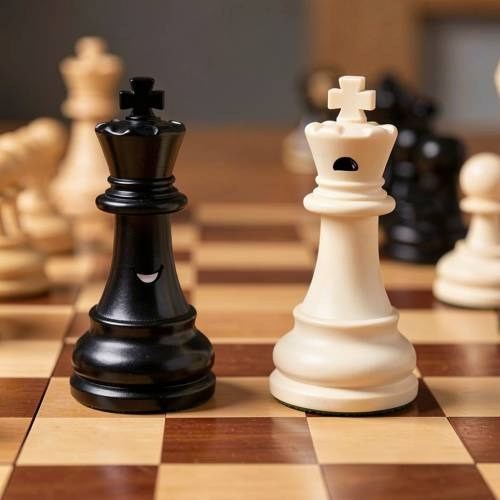
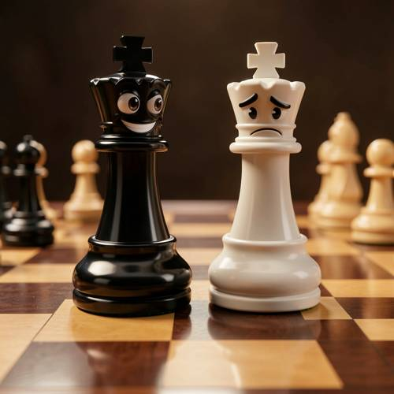

Attribute — On the chessboard, the black king chess piece was smiling proudly, and
On the chessboard, the black king chess piece was smiling proudly, and beside it was a sad white king chess piece. The game was decided.

Direct — one call, no iteration

Continuum — Kimi K3 + FLUX.2-klein-9B
Judge — Direct
FAILAttribute - Expression — The black king chess piece has a white, upward-curved line on its body that resembles a smile. The white king chess piece has a small black arched opening, but it does not convey a clear sad expression as required by the prompt.
PASSRelationship - Similarity — The image shows two objects that are both identifiable as king chess pieces, distinguished by their shape and the cross on top. One is black, and the other is white.
PASSWorld Knowledge — The image correctly depicts a chessboard with alternating light and dark brown squares, and the main subjects are identifiable as king chess pieces, which aligns with the common knowledge of the game of chess.
Judge — Continuum
PASSAttribute - Expression — The black king chess piece has a face with a wide smile, raised eyebrows, and wide eyes, conveying a proud and happy expression. The adjacent white king chess piece has a face with a downturned mouth, furrowed brows, and droopy eyes, clearly depicting a sad expression.
PASSRelationship - Similarity — The image shows two chess pieces that are similar in their fundamental shape, both being identifiable as king chess pieces. They share the characteristic form of a king piece, including the base, column, and the cross finial, differing primarily in color and their facial features.
PASSWorld Knowledge — The image correctly depicts a chessboard with alternating light and dark wooden squares. The main subjects are identifiable as king chess pieces based on their standard design, particularly the cross on top.
What the agent did
Thinking
We need respond to user request likely generate image. Need use tools. Benchmark says generate image with flux2-klein, inspect, edit etc. User prompt is image generation. Need generate image. Need maybe phrase: black king smiling proudly beside sad white king, game decided. Need visual anthropomorphic chess pieces perhaps faces. Chessboard. Could generate 1024. Need maybe mark best. Let's generate with detailed prompt.
Step 1 — `generate_image`
{
"model": "flux2-klein",
"prompt": "A dramatic close-up on a wooden chessboard after checkmate: a glossy black king chess piece in sharp focus with a proud, triumphant cartoon-like smile and gleaming eyes, standing upright beside a white king chess piece that looks sad and defeated with a downturned expression. The black king remains stately and chess-piece-shaped, not humanoid. The white king leans slightly, conveying loss. Scattered chess pieces and a subtle checkmate arrangement in the background, low warm lighting, shallow depth of field, polished reflective surfaces, cinematic composition, no text."
}
Result img_0
Thinking
Image looks excellent, matches. Need mark best and stop. Last action check mark. Call mark_best. Then respond concise with image maybe already inline.
Step 2 — `mark_best`
{
"image": "img_0",
"reason": "The image clearly shows a proud smiling black king beside a sad white king on a chessboard, with the outcome visually settled and all requested elements present."
}
Thinking
Need final user likely nothing more. Could say "Done — ..." The image is already shown by tool. We need maybe no extra.
Model
Done — the black king looks proudly victorious while the white king appears sadly defeated.